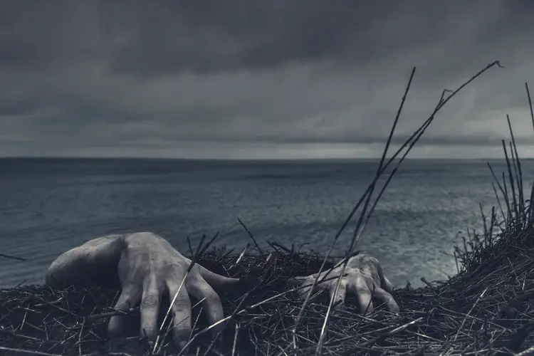
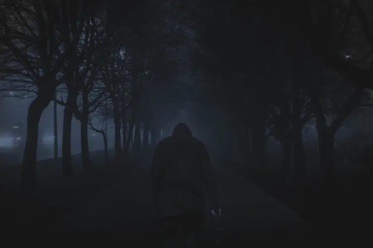
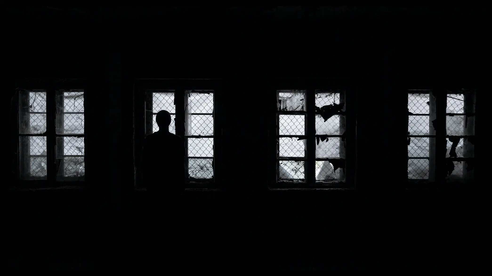

Defending yourself against The Infected
The Infected are a dangerous new species born of the O-COVID-21 virus. They have increased aggression and faster reflexes than humans. If you can, run before ever engaging these ruthless hunters. If you cannot run, then you will have to fight to survive. Find out more below.
Click on the links below to go to each section, or you can take the scenic route and scroll.

The Infected - Variants
There are three known variants of those infected by O-COVID-21, also known as the Infected. Each variant has its own distinct qualities, strengths and weaknesses. We have been working tirelessly to find out everything you need to know about the Infected, from their habits to their skills. If you find any additional information regarding the Infected, please feel free to let us know on our Contact Page.
-
 Shamblers - Homo sapiens mūtans:
Shamblers are the first type of mutation found in the final stage of infection. When found in a group, called a hive, these individuals are classed as the worker. They're often seen creating nests and gathering in hordes in search of food. If threatened, the Shamblers scream to warn other Infected nearby. Upon hearing the scream, all nearby Infected will rush to their hive-mate and attack every living thing.
Shamblers - Homo sapiens mūtans:
Shamblers are the first type of mutation found in the final stage of infection. When found in a group, called a hive, these individuals are classed as the worker. They're often seen creating nests and gathering in hordes in search of food. If threatened, the Shamblers scream to warn other Infected nearby. Upon hearing the scream, all nearby Infected will rush to their hive-mate and attack every living thing.
-
 Brutes - Homo sapiens mūtans corporosus:
Brutes display increased muscle mass and hardened bones. They often attack poorly defended compounds and convoys with extreme violence. One Tank has been know to demolish a wooden palisade in under one minute and should be avoided at all costs. Thankfully this variant is not very common, only appearing in one in every one thousand cases.
Brutes - Homo sapiens mūtans corporosus:
Brutes display increased muscle mass and hardened bones. They often attack poorly defended compounds and convoys with extreme violence. One Tank has been know to demolish a wooden palisade in under one minute and should be avoided at all costs. Thankfully this variant is not very common, only appearing in one in every one thousand cases.
-
Hive-Leaders - Homo sapiens mūtans princeps:
 This variant is a rare mutation, appearing as a leader within the group. They issue orders through the "hive" through a form of telepathy. They retain some higher brain function, allowing them to organise other Infected in attacks on compounds and convoys. These leaders appear very rarely, only one in one million cases. They attract other Infected to them to form hives and are very territorial against other leaders.
This variant is a rare mutation, appearing as a leader within the group. They issue orders through the "hive" through a form of telepathy. They retain some higher brain function, allowing them to organise other Infected in attacks on compounds and convoys. These leaders appear very rarely, only one in one million cases. They attract other Infected to them to form hives and are very territorial against other leaders.
The Infected - Strengths and Weaknesses
The Infected are immensely strong with heightened reflexes. And while they may have overwhelming numbers, they have several weaknesses that you can use to defend yourself. We have found the most important strengths and weaknesses in The Infected, so you don't have to. Just pick up your favourite weapon and get to it!
-
Shamblers:

- Shamblers are unintelligent but fast. They have strong legs, which allows them to jump high fences and sprint over very long distances. The highest recorded jump of a Shambler is around 5 feet in height, and they can reach speeds of up to 15mph. Shamblers can scream very loudly and at a very high pitch, alerting other Infected in the area. Shamblers tend to travel in large groups known as hives. They are relentless when attacking, often dying during an attack. When alone, they are single-minded and will act only in their own best interests. When controlled by a Hive Leader, they will defend their hive at all costs. When under control, they tend to swarm and create diversions, allowing others to enact heavier attacks.
- Due to their screams, most Shamblers have very poor hearing. If you are careful to stay out of sight, you can sneak around them and attack without notice. Just remember that while their hearing may not be good, their sense of smell is, so be careful!
- If you are well-armed, with backup, or have no alternative, attacking a Shambler's throat and legs can at the very least buy you some time. If you can cut a Shambler's throat, they will be unable to call for help. Attacking the legs will remove its ability to chase you. Doing this will cause the Shambler to bleed out, meaning you will have time to run before another comes along. Due to the density of their leg muscles and the force they put into each step, luring them over a marsh, swamp, quicksand, or similar, would cause them to get stuck and allow you to dispatch them more easily.
-
Brute:

- Brutes are heavy and slow to react, but they are also incredibly strong and muscular. They have been known to crush a person’s skull between their hands and snap bones in an instant. They are also able to break through poorly built defences really easily. When controlled by a Hive Leader, they can be directed to a poorly defended point along a fence and force their way into a compound.
- It is advised to avoid direct confrontation with Brutes. Slow as they are, it would be safer to engage them with ranged weaponry, or to guide them into a trap, such as a water pit. If you must engage them in close quarters then you should stay out of a Brute’s reach, ideally circling behind and attacking its legs and joints. Sharp weapons can be used to cut ligaments rendering the Brute becomes immobile, while blunt weapons can be used to target the knees and joints to potentially dislocate or break bones. Either of these attacks would leave the Brute vulnerable, although you would still need to be vigilant as Brutes can still drag themselves slowly and kill you if you are not careful.
-
Hive-Leader:

- It is unusual to see a Hive Leader out in the open. They are blind, vulnerable to attack and generally stay out of conflict. They are not particularly strong, being slightly weaker than your average human. Hive Leaders have access to higher brain function, allowing them to strategise and organise other Infected. If a horde is attacking in a coordinated manner, you will likely find a Hive Leader somewhere close by. There is never more than a single leader in a Hive as they are very territorial. If two or more Hive Leaders come into contact, the dominant one will kill the others unless the hive chooses to side with another Leader. Then the entire Hive will ruthlessly attack the other leaders.
- The Hive Leader’s strength is in the numbers of Infected that surround it. The more Infected that surround it, the stronger its position and the more daring it becomes in its attacking. Although blind, Hive Leaders' heightened senses make it almost impossible to approach stealthily. It is unknown how it can coordinate attacks, but it is believed to be a form of telepathy, allowing it to gain information from other infected under its control.
- It is unlikely that you will be able to approach a Hive Leader, due to it likely being surrounded by other Infected and its heightened senses. The Hive Leader can claw viciously as a last resort if you do manage to corner one. The ideal way to engage a Hive Lead would be to try and get to a vantage point and attack it from range. The obvious point of attack would be the head but, any attack could potentially kill one as they are still susceptible to blood loss and internal injuries.